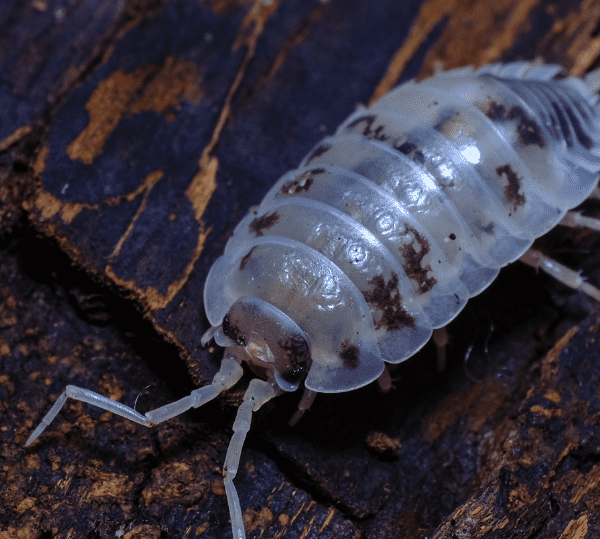

About Isopods
Isopods, also known as woodlice or roly-polies, are fascinating creatures that belong to the crustacean family. These small, armored critters can be found in various terrestrial habitats around the world, from rainforests to deserts. Despite their humble appearance, isopods have some remarkable characteristics that make them a captivating subject of study
Find Out More